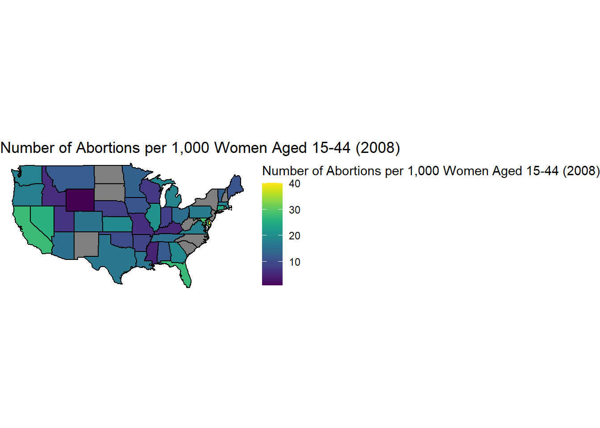

library(poliscidata) # may have to install firstlibrary(dplyr)library(stringr)library(ggplot2)library(readr)library(viridis)state_data <-as_tibble(poliscidata::states) |>mutate(state_name =str_squish(str_to_lower(as.character(state)))) |>select(-state)print(state_data, n =5, width =Inf)
Rows: 2850 Columns: 15
── Column specification ────────────────────────────────────────────────────────
Delimiter: ","
chr (3): State, Governor, Region
dbl (11): people_vaccinated, total_distributed, share_doses_used, people_va...
date (1): Date
ℹ Use `spec()` to retrieve the full column specification for this data.
ℹ Specify the column types or set `show_col_types = FALSE` to quiet this message.
# A tibble: 50 × 5
State Date people_vaccinated_per100 share_doses_used Governor
<chr> <date> <dbl> <dbl> <chr>
1 Alabama 2021-03-13 17.2 0.671 R
2 Alaska 2021-03-13 27.0 0.686 R
3 Arizona 2021-03-13 21.5 0.821 R
4 Arkansas 2021-03-13 19.2 0.705 R
5 California 2021-03-13 20.3 0.726 D
6 Colorado 2021-03-13 20.8 0.801 D
7 Connecticut 2021-03-13 26.2 0.851 D
8 Delaware 2021-03-13 20.2 0.753 D
9 Florida 2021-03-13 20.1 0.766 R
10 Georgia 2021-03-13 15.2 0.674 R
# ℹ 40 more rows
library(maps)
Attaching package: 'maps'
The following object is masked from 'package:viridis':
unemp
us_states <-map_data("state")head(us_states)
long lat group order region subregion
1 -87.46201 30.38968 1 1 alabama <NA>
2 -87.48493 30.37249 1 2 alabama <NA>
3 -87.52503 30.37249 1 3 alabama <NA>
4 -87.53076 30.33239 1 4 alabama <NA>
5 -87.57087 30.32665 1 5 alabama <NA>
6 -87.58806 30.32665 1 6 alabama <NA>
state_data <-as_tibble(poliscidata::states) |>mutate(state_name =str_squish(str_to_lower(as.character(state)))) |>select(-state)state_data |>select(-region) |>right_join(us_states, by =c("state_name"="region")) |>ggplot(mapping =aes(x = long, y = lat, group = group)) +geom_polygon(aes(fill = abort_rate08), color ="black") +labs(fill ="Number of Abortions per 1,000 Women Aged 15-44 (2008)",title ="Number of Abortions per 1,000 Women Aged 15-44 (2008)")+coord_map() +theme_void() +scale_fill_viridis()

California, Nevada, and Florida has the highest number of abortions per 1000 women aged 15-44 in 2008. Wyoming has the lowest number of abortions per 1000 women aged 15-44 in 2008.